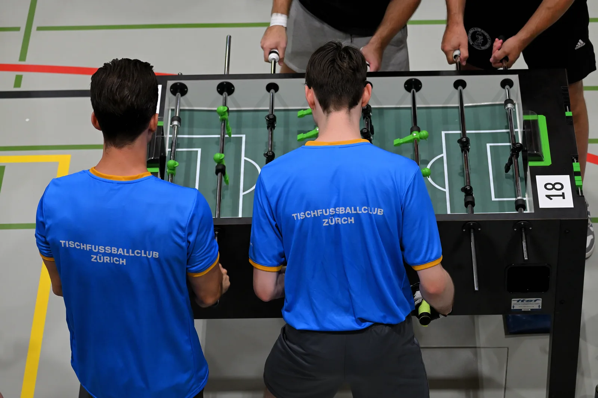

Variante 3 · Was willst du?
Wo Zürich töggelt.
Die Seite ist nicht mehr nach Vereins-Themen sortiert, sondern nach dem, was Besucher vorhaben. Es gibt genau einen Menü-Einstieg — auf Handy und Desktop denselben. Doppelt kann hier nichts sein, weil es nur ein Menü gibt.
1
Mal reinschauen
Kein Vorwissen, keine Anmeldung, kein eigener Ball. Nur vorbeikommen.
- 1.Such dir einen Abend: Mo offenes Töggele · Mi Clubabend · Fr Plausch-Turnier.
- 2.Komm an die Landenbergstrasse 10 in Wipkingen — 4 Minuten ab Bahnhof Wipkingen.
- 3.Sag an der Bar Bescheid, dass du neu bist. Jemand stellt dich an einen Tisch.

2
Dabeibleiben
Wenn's dich gepackt hat: Mitgliedschaft, Training, Turniere.
·
Galerie
Bilder aus Halle und Turnieren.
·
Kontakt
Landenbergstrasse 10, 8037 Zürich Wipkingen · info@tfcz.ch